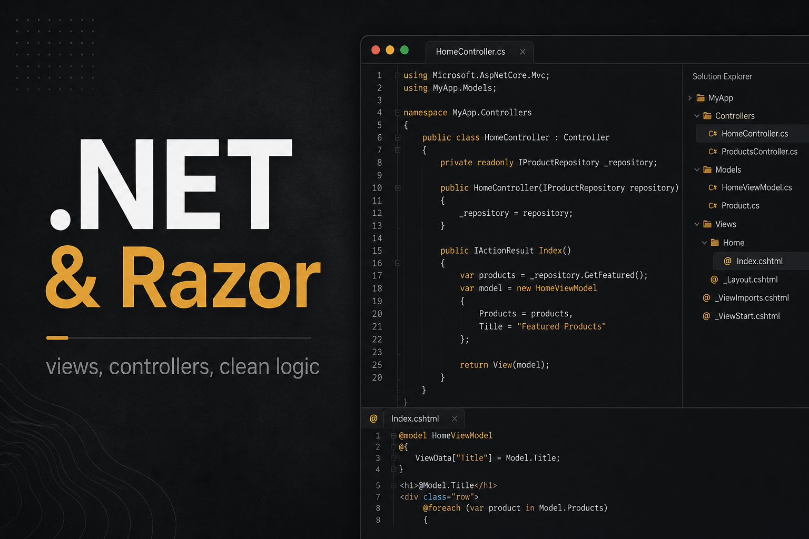
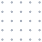
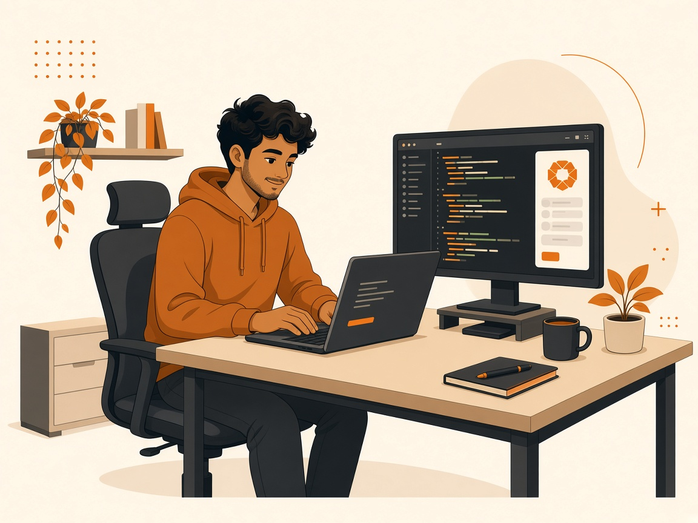

- Umbraco
- JavaScript
- C#
Block Field Visibility
Umbraco package that hides or shows Block List fields in the backoffice so editors only see what they need.
I work with Umbraco at ZAAKS! in Kathmandu. If you're looking at it and need a hand, I can help.
Say hi
Currently at ZAAKS! · Kathmandu
The best Umbraco build is the one editors run without calling me.
I'm Saroj — Umbraco and .NET developer at ZAAKS! in Kathmandu, building sites and backoffices that are straightforward for the people who edit content every day.
More about me on the about page.
Read more ->
Roughly what people reach out about. Yours doesn't have to fit a box.
Standing up a new Umbraco site with models and Block Lists editors can actually use from week one.
When the CMS works but the backoffice doesn't — confusing types, messy blocks, or Razor nobody wants to touch.
Controllers, views, Azure hosting, Examine — the parts around Umbraco, not only the CMS UI.
Weighing Umbraco against something else? Happy to share an honest take from day-to-day use.
what I use
Umbraco, .NET, and the backoffice work I do at ZAAKS! — document types, Block Lists, custom packages, and editor workflows that keep teams shipping without a dev in the loop.
Fastest route: GitHub or LinkedIn below. A short note about your Umbraco situation is enough to start.